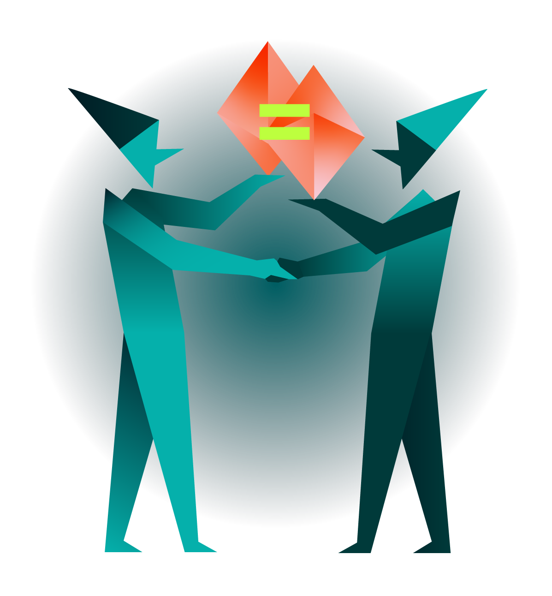

Bridging,
But Better
Bridge between rollups
with world-class user experience
Try Beamer on Testnet
try the app
What can you use Beamer for?
Beamer solves the problem of rollup silos in the L2 space. Our bridge enables users to move and consolidate assets across rollups, make P2P payments to recipients on other rollups, and access dApps on other rollups.
Certain
The amount of tokens sent and received will always be the same. That means no more guessing due to conversion rates or slippage
Fast
Most transfers will be completed in just a few blocks. On average, transfers are reliably completed within 20 seconds.
Simple
The user only needs to sign one transaction per transfer. Once received, the recipient will be able to use them right away.
Secure
Beamer relies on Ethereum L1. There are no new security assumptions. Users will always receive their tokens and they can use them right away.
Beam Tokens between
How does Beamer work?
For Users
The user initiates a transfer.
1. The assets and fees get locked on the initial rollup.
2. The agent send assets to the user on the target rollup within seconds.
The user can now access and use the assets on the target rollup.
For Liquidity Providers
1.The agent monitors incoming transfer requests from users and provides assets on the target rollup on behalf
of the liquidity provider.
2. After sending assets to the target rollup, the Agent can now claim and withdraw the locked assets on the
initial rollup.
The current test version of Beamer only allows user functions.
The Agent functions will be available to liquidity providers soon!
Beamer is a community-driven and open-source project.
Voice your feedback, comments and questions.